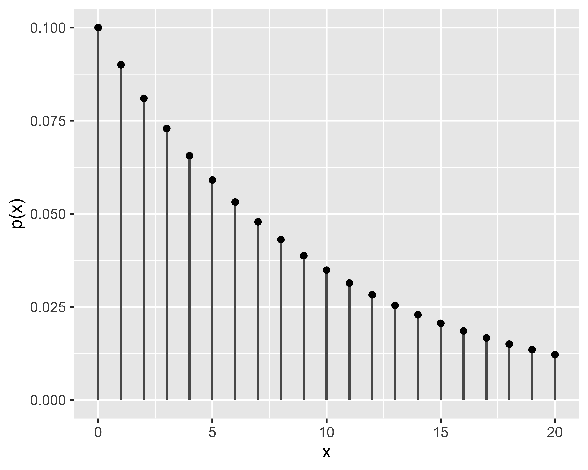
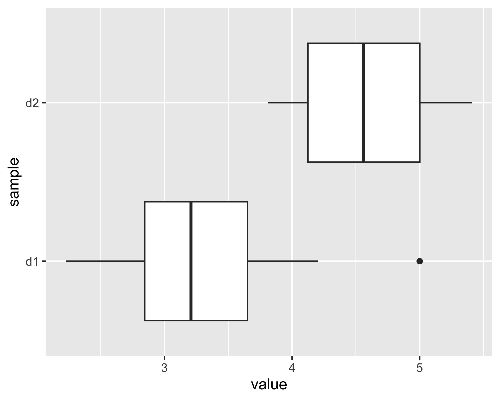
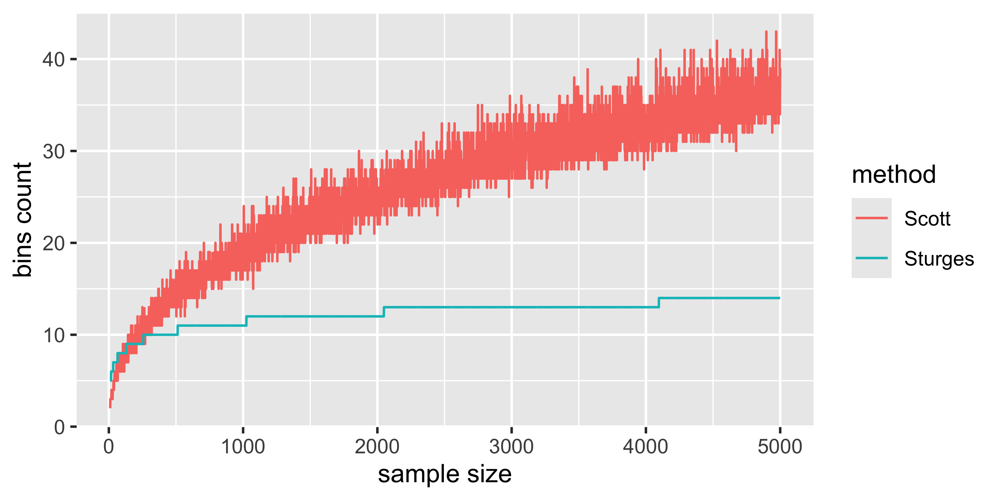
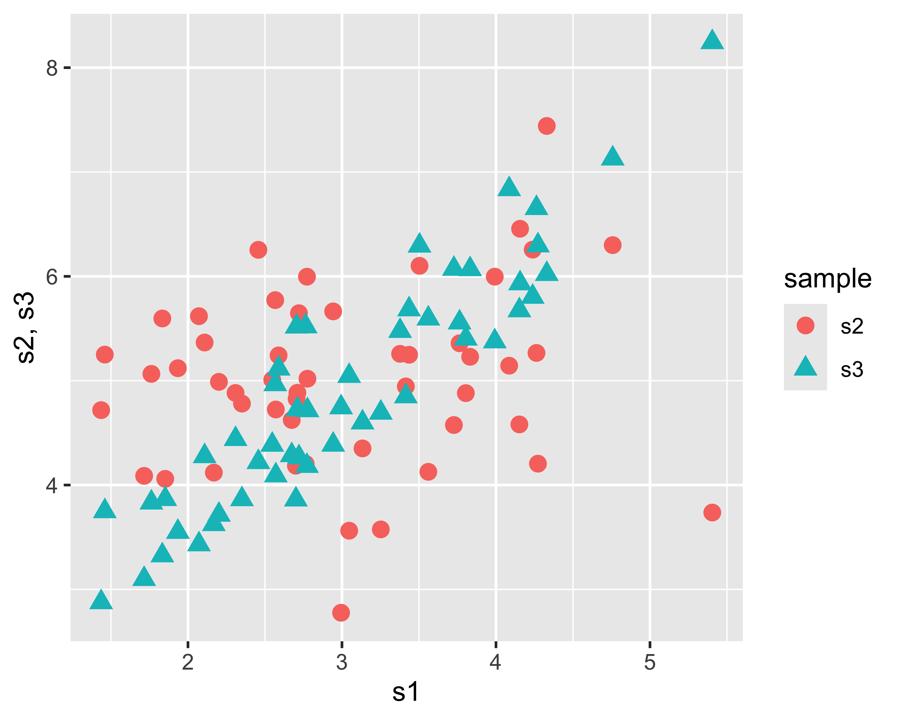

Intro to Statistics
Design of Experiments and Statistical Analysis of Experimental Data, 2025

Paolo Bosetti
University of Trento, Department of Industrial Engineering
Descriptive statistics
Descriptive Statistics is used to describe the behavior of random variables
Random (or stochastic) variables
A stochastic variable is a variable that takes on random values at each observation, i.e. such that it is not possible to predict the exact value of the next observation, not even knowing the previous observations
measurement is the process that leads to the objective evaluation of the measurand. The result of a measurement is called measure
Stochastic variables are of particular interest for engineering and industry in general, given that each measurement produces, as a result, a value that has a random content and can therefore be represented as a stochastic variable
In turn, the random contribution to a measurement is called uncertainty
Given that every production activity is inextricably linked to measurements, it is therefore clear how fundamental it is to treat random contributions to measurements in a coherent and robust manner
Scale effect
Scale effect
Scale effect
In other words, the stochastic component of a measurement is affected by a scale effect: the smaller the ratio between the average value measured and the variability typical of the instrument (i.e. its precision), the less appreciable the random effect will be
It is therefore essential to precisely and effectively define intuitive concepts such as variability and average value that we have expressed above
Populations
In statistics, a population is a set of values, objects or events of interest for some analysis or experiment.
To study the height of residents in the city of Trento, the population of interest is the entire population of Trento.
To study the mechanical behavior of the aluminum alloy produced by a certain plant, the population of interest can be the entire quantity of alloy produced by a certain batch of raw material
But to also study the effects of variability in raw materials (between one batch and another), environmental conditions, etc., it would be more appropriate to define a larger set as a population
Therefore, the definition of the population of interest is often arbitrary
Populations
So:
the definition of the population depends on the objective of the analysis
the size of a population is generally very large and potentially not limited
consequently it is often impractical to consider the entire population
we then work on subsets randomly extracted from the population, called samples
being randomly drawn, the samples approximate the population, the more numerous they are, the better
Population
By observing a population we can identify a central value and a variability
Moments of a population
The central value is called expected value and the variability is called variance
Expected value:
for discrete r.v.: \(\mu = E(x) := \sum_{i = 1}^N x_i p(x_i)\)
for continuous r.v.: \(\mu = E(x) := \int_{-\infty}^{+\infty} x f(x)~\mathrm{d}x\)
Variance:
- for discrete r.v.: \(\sigma^2 = V(x) := \sum_{i = 1}^N (x_i -\mu)^2 p(x_i)\)
- for continuous r.v.: \(\sigma^2 = V(x) := \int_{-\infty}^{+\infty} (x - \mu)^2 f(x)~\mathrm{d}x\)
where \(E()\) and \(V()\) are the expected value and variance operators, respectively; \(x_i\) (and \(x\)) is the generic observation of the r.v., and \(p(x_i)\) and \(f(x)\) are the probability and probability density of finding a given value
The properties of a population are indicated with Greek letters: \(\mu\) and \(\sigma^2\)
NOTE: This results in \(\sigma^2 = E\left[(x-\mu)^2\right]\)
Probability and probability density
Probability (or frequency): for a discrete r.v., corresponds to the ratio between the number of observations of a given value and the total number of observations
Probability density: for a continuous r.v., the probability of exactly finding a given value is zero, therefore we are referring to a probability of finding a value within a given interval. The probability density is the derivative of this value
- Cumulative probability (Cumulated Distribution Function): \(p(x_0) = P(x\leq x_0)\)
- Probability Density (Probability Density Function): \(f(x) = \frac{d}{dx} p(x)\)
- Also valid is \(p(x_0) = \int_{-\infty}^{x_0}f(x) \mathrm d x\)
Probability and probability density
Also, note that probability and frequency must add to 1: respectively: \[ \begin{array}{l} \sum_i p(x_i) = 1 \\ \int_{-\infty}^\infty f(x)~\mathrm{d}x = 1 \end{array} \]
This is because obviously the probability of finding any value must be certain, i.e. 1
Operator properties
The expected value and variance operators have the following properties:
\[ \begin{array}{l} E(c)&=&c\\ E(x)&=&\mu\\ E(cx)&=&cE(x)=c\mu\\ V(c)&=&0\\ V(x)&=&\sigma^2\\ V(cx)&=&c^2V(x)=c^2\sigma^2\\ E(x+y)&=&E(x)+E(y)=\mu_x+\mu_y\\ \mathrm{Cov}(x,y)&=&E[(x-\mu_x)(y-\mu_y)] \label{eq:cov}\\ V(x+y)&=&V(x)+V(y)+2\textrm{ Cov}(x,y)\\ V(x-y)&=&V(x)+V(y)-2\textrm{ Cov}(x,y) \end{array} \]
where \(c\) indicates a constant
Correlation and covariance
The covariance operator is an index of how interdependent two stochastic variables are
More useful than covariance (which is not limited) is correlation which has the advantage of being within the range \([-1,1]\):
\[ \mathrm{Corr}(x, y) = \frac{E[(x-\mu_x)(y-\mu_y)]}{\sigma_x\sigma_y} = \frac{\mathrm{Cov}(x,y) }{\sigma_x\sigma_y} \]
- close to zero means no correlation
- close to 1 means strong positive correlation (if \(x\) increases, \(y\) also increases)
- close to -1 means strong negative correlation (if \(x\) increases, \(y\) decreases).
Covariance and correlation are also referred to as \(\sigma_{xy}^2\) and \(\rho_{xy}\), respectively.
Samples
A population may be too large to be analyzed directly
Then we analyze the subsets obtained by sampling, i.e. random extraction
Randomly drawing a large enough sample does not alter the distribution properties of the population
From a population of \(N\) elements it is possible to extract a number of different samples of size \(n\) described by the binomial coefficient: \[\binom{N}{n}=\frac{N! }{(N-n)!n!},~N>n\]
Estimators
For each property of the population it is possible to define an estimator, or statistic, built on the sample
Sample mean and variance are defined
\[ \begin{eqnarray} \bar x &=& \frac{1}{n}\sum_{i=1}^n x_i\\ S^2 &=& \frac{\sum_{i=1}^n (x_i - \bar x)^2}{n-1} \end{eqnarray} \]
A particular value taken by an estimator is called estimate
Instead of the variance \(S^2\) the standard deviation \(S\) is often used (same units of measurement)
Estimators
For each property of the population it is possible to define an estimator, or statistic, built on the sample
Sample mean and variance are defined
\[ \begin{eqnarray} \bar x &=& \frac{1}{n}\sum_{i=1}^n x_i\\ S^2 &=& \frac{\sum_{i=1}^n (x_i - \bar x)^2}{n-1} \end{eqnarray} \]
A particular value taken by an estimator is called estimate
Instead of the variance \(S^2\) the standard deviation \(S\) is often used (same units of measurement)
Estimates
Since each sample is drawn randomly, each estimate is a random variable
The larger the sample, the closer the estimate is to the corresponding property: convergence in distribution
Expected value and variance of the sample mean
Expected value of the average:
\[ \begin{eqnarray} \mathrm E(\bar x) &=& \mathrm E(\frac{x_1+x_2+\dots+x_n}{n}) = \frac{1}{n}\left[\mathrm E (x_1+x_2+\dots+x_n) \right]\\ &=& \frac{1}{n}\left[\mathrm E(x_1)+\mathrm E(x_2)+\dots+\mathrm E(x_n) \right] = \frac{1}{n} n\mathrm E(x) \\ \mathrm E(\bar x)&=& \mu \end{eqnarray} \]
Variance of the mean:
\[ \begin{eqnarray} \mathrm V(\bar x) &=& \mathrm V(\frac{x_1+x_2+\dots+x_n}{n}) = \frac{1}{n^2}\left[\mathrm V(x_1+ x_2+\dots+x_n) \right]\\ &=& \frac{1}{n^2}\left[\mathrm V(x_1)+\mathrm V(x_2)+\dots+\mathrm V(x_n) \right] = \frac{n\mathrm V( x)}{n^2} = \frac{\mathrm V(x)}{n} \\ \mathrm V(\bar x) &=& \frac{\sigma^2}{n} \end{eqnarray} \]
Degrees of freedom
The degrees of freedom of a statistic (GdF or DoF) are the number of independent elements that appear in its definition. From the definition of the variance it follows that
\[ \sigma^2=E\left(\frac{\sum(x_i - \bar x)^2}{n-1}\right)=E\left(\frac{SS}{\nu}\right) \]
That is, the variance is the expected value of the Sum of Squares divided by its number of degrees of freedom \(\nu\), i.e. of independent elements.
That the latter are \(n-1\) is demonstrated by the following relation: \[ \sum_{i=1}^n(x_i-\bar x) = \sum_{i=1}^n(x_i)-n\bar x=:0 \] therefore not all the \(n\) elements in the definition of \(SS\) can be independent, given that the value of one of them is predictable from the remaining \(n-1\) thanks to the definition of \(\bar x\)
Distributions
Expected value and variance are not the only two properties of a population.
Two populations can have the same expected value and variance parameters but have different shapes. The shape of a population is called distribution
- pop1 shows the same probability between 9 and 31 approximately
- pop2 shows higher probability around 20 which thins out upwards and downwards
Distributions
Discrete distributions

Continuous distributions
Discrete distributions
Binomial or Bernoulli distribution
A Bernoulli process is a series of \(n\) events with outcomes \(z_1, z_2, \dots, z_n\) such that:
- events \(z_i\) are all independent
- each \(z_i\) can be represented with 0 or 1
- the probability of success \(p_s\in[0,1]\) of each event is constant
The binomial distribution describes the probability of getting \(x\in[0, n]\) successes (out of \(n\) trials)
- We say that \(x\sim\mathrm{Binom}(n,p_s)\) or even \(x\sim\mathcal{B}(n,p_s)\) when the PDF is: \[ p(x)=\binom{n}{x}p_s^x(1-p_s)^{n-x},~~~x\in{0,1\dots,n} \]
- Moments: \[ \mu=np_s,~~~\sigma^2=np_s(1-p_s) \]
- probability of getting 8 heads by flipping a coin 10 times
- probability of finding 3 defective items in a batch of 20, with a defect rate of 0.1
- probability of 2 sixes in 10 dice rolls
Poisson distribution
- Probability of having a number \(x\in\mathbb{N}^+\) of events that occur successively and independently in a given interval of time (or space…)
- On average \(\lambda\in\mathbb{R}^+\) events occur in the same interval
- It is also known as law of rare events
- We say that \(x\sim\mathrm{Poisson}(\lambda)\) or \(x\sim\mathcal{P}(\lambda)\) when the PDF is: \[ p(x)=\frac{e^{-\lambda}\lambda^x}{x!},~~~\forall x\in\mathbb{N}^+ \]
- Moments: \[ \mu=\lambda,~~~\sigma^2=\lambda \]
- probability of finding a defect on 1 m of wire, when there are on average 9 defects every 100 m: \(\lambda=\frac{9~\text{def}}{100~\text m} * 1~\text m = 0.09~\text{def}\)
- probability of receiving a phone call in the next 10 min in a switchboard which receives on average 250 calls per day: \(\lambda=\frac{250~\text{calls}}{24~\text{h}} * 1/6~\text{h} \simeq 1.74~\text{calls}\)
- probability of incoming patient in a hospital with an average of 1825 patients per year: \(\lambda=1825~\text{patients}/365~\text{days} \simeq 5~\text{patients}\) (see chart on the right)
Geometric distribution
It is the probability distribution of obtaining a success in a Bernoulli process after \(x \in \mathbb{N}^+\) failures (so, when \(x=0\) we have a success on first trial and \(p(0)=p_s\))
- It is said that \(x\sim\mathrm{Geom}(p_s)\) or \(x\sim\mathcal{G}(p_s)\) when the PDF is: \[ p(x)=p_s(1-p_s)^{x-1},~~~x \in\mathbb{N}^+ \]
- Moments: \[ \mu=(1-p_s)/p_s,~~~\sigma^2=(1-p_s)/p_s^2 \]
- The probability of getting a sequence of ten tails in sequence (and then a head) by flipping a coin
Continuous distributions
Uniform distribution
- distribution in which all the values of the r.v. they have the same probability
- can be both discrete and continuous
- We say \(x\sim\mathcal{U}(a,b)\) when the PDF is: \[ f(x)=\begin{cases} 1/(b-a),&x\in[a, b] \\ 0,&\textrm{otherwise} \end{cases} \]
- Moments: \[ \mu=(b+a)/2,~~~\sigma^2=\frac{(b-a)^2}{12} \]
- Rolling a 6-sided die (fair)
- The extraction of a bingo number (discrete)
- The stopping angle of a freely rotating wheel (continuous)
Normal or Gaussian distribution
- Represents the case in which the probability of finding values that are progressively further from the expected value decreases asymptotically to 0
- The probability of any value is never zero
We say that \(x\sim\mathrm{Norm}(\mu,\sigma^2)\) or \(x\sim\mathcal{N}(\mu,\sigma^2)\) when the PDF is: \[ f(x) =\frac{1}{\sigma \sqrt{2 \pi}}e^{-\frac{1}{2}\left[\frac{x-\mu}{\sigma}\right ]^2} \]
Moments: coincide with the two parameters \(\mu\) and \(\sigma^2\)
If \(x\sim\mathcal{N}(\mu, \sigma^2)\) then \[ \frac{x-\mu}{\sigma}\sim\mathcal{N}(0,1) \] and the distribution \(\mathcal{N}(0,1)\) is called standard normal.
Central limit theorem (statement)
Theorem 1 (Celtral limit) If \(x_1, x_2, \dots,x_n\) are \(n\) independent and identically distributed (IID) random variables with \(E(x_i)=\mu\) and \(V(x_i)=\sigma^2~ ~\forall i=1,2,\dots,n\) (both finite), and \(y=x_1+x_2+\dots+x_n\), then: \[ z_n=\frac{y-n\mu}{\sqrt{n\sigma^2}} \] approximates a distribution \(\mathcal{N}(0,1)\), in the sense that if \(F_n(z)\) is the distribution function of \(z_n\) and \(\Phi(z)\) is the distribution function of \(\mathcal{N}(0,1)\), then: \[ \lim_{n\rightarrow+\infty}\frac{F_n(z)}{\Phi(z)}=1 \]
Central limit theorem (meaning)
- Fundamental in the field of measurements:
- a measurement is the sum of a series of events
- each event can have an unknown distribution
- by adding many distributions the result converges to the normal
- therefore the result of a measurement is often normal
- Convergence is often very rapid (about ten elements)
- Note: adding or multiplying a distribution by a constant changes its moments but the distribution remains the same. Instead, operations between r.v. change the resulting distribution!
Chi-square distribution
- It is the distribution of a sum of standard normal distributions
- That is, let \(x = z_1^2+z_2^2+\dots+z_k^2\), with \(z_i\sim\mathcal{N}(0,1)~~\forall i=1, 2, \dots ,k\), then the distribution of \(x\) is a Chi-square
- The number of summed normals \(k\) is the number of degrees of freedom of the distribution
- We say that \(x\sim\chi^2_k\) when the PDF is: \[ f(x)=\frac{1}{2^{k/2}\Gamma(k/2)}x^{k/2-1}e^{-y/2} \]
- Moments: \[ \mu=k,~~~\sigma^2=2k \]
Considering the quadratic sum of a sample of \(k\) elements \(y_i\), each coming from a distribution \(\mathcal{N}(\mu, \sigma^2)\), it turns out that: \[ \frac{(y_i-\bar y)}{\sigma}\sim \mathcal{N}(0,1)~~\forall i=1,2,\dots,k \] and therefore: \[ \frac{\mathit{SS}}{\sigma^2}=\frac{\sum_{i=1}^k(y_i-\bar y)^2}{\sigma^2} \sim \mathcal{X }^2_{k-1} \]
Student’s T distribution
Let there be two r.v. \[ z\sim\mathcal{N}(0,1),~x\sim\mathcal{X}^2_k \] then their combination \[ x=\frac{z}{\sqrt{x/k}} \] is distributed as a Student’s T
It is said that \(x\sim\mathrm{T}_k\) or \(x\sim\mathcal{T}_k\) when the PDF is: \[ f(x)=\frac{\Gamma\left((k-1)/2\right)}{\sqrt{k\pi}\Gamma(k/2)}\frac{1}{((x^ 2/k)+1)^{(k+1)/2}} \]
Moments: \[ \mu = 0,~~~ \sigma^2=k/(k-2) \]
Student’s T is a special case of \(\mathcal{N}(0,1)\): \[ \lim_{k\rightarrow+\infty}t_k=\mathcal{N}(0,1) \] The convergence is very rapid: already for \(k>30\) the difference between the two distribution functions becomes negligible
Distribution F by Snedecor
Let there be two r.v. \[ x_u\sim\mathcal{X}^2_u,~~~x_v\sim\mathcal{X}^2_v \] and \(x\) is defined as: \[x=\frac{x_u/u}{x_v/v}\] then \(x\) is a r.v. distributed as an F of Snedecor
It is said that \(x\sim\mathrm{F}_{u,v}\) or \(x\sim\mathcal{F}_{u,v}\) when the PDF is: \[ f(x)=\frac{\Gamma\left(\frac{u+v}{2}\right)\left(\frac{u}{v}\right)^{u/2}x^{( u/2)-1}}{\Gamma\left( \frac{u}{2} \right)\Gamma\left( \frac{v}{2} \right) \left(\frac{u}{ v}x+1\right)^{(u+v)/2}} \]
Moments: \[ \mu = \frac{v}{v-2},~~~\sigma^2=\frac{2v^2(u+v-2)}{u(v-2)^2(v-4) } \]
Distribution functions
A distribution is described by three interrelated functions:
- distribution density function, PDF
- cumulative distribution function, CDF, is the progressive integral of the PDF: \[ \begin{array}{rcl} \mathrm{CDF}^-(x) &=& \int_{-\infty}^x \mathrm{PDF}(x)~\mathrm{d}x \\ \mathrm{CDF}^+(x) &=& \int^{+\infty}_x \mathrm{PDF}(x)~\mathrm{d}x \end{array} \]
- quantile function, is the inverse of the CDF; it is defined only in \([0,1]\)
Inferential statistics
Studies the operations of inference, i.e. obtaining information on the population starting from a sample
Statistical hypotheses
- It has been seen that the sample mean and variance are two estimators and represent random variables
- So by taking two samples from a population the two estimates of mean and variance will always be different
- How do I know if two samples with different means come from the same population?
- I can formulate a pair of alternative hypotheses: \[ \begin{eqnarray} H_0:~&\mu_1 = \mu_2 \\ H_1:~&\mu_1 \neq \mu_2 \\ \end{eqnarray} \]
Confusion matrix
A hypothesis test can have two types of errors:
- Type I error: false positive, or false alarm
- Type II error: false negative, or no alarm
The purpose of inferential statistics is to associate a probability with these errors
| Null hypothesis | true | false |
|---|---|---|
| accepted | OK | Type II error |
| rejected | Type I error | OK |
The probability of a Type I Error is \(\alpha\), the probability of a Type II Error is \(\beta\).
The value \(1-\beta\) is the power \(P\) of the test
Student Test

- William S. Gosset, known as Student, Guinness brewmaster in Dublin, ~1900
- Problem: how to decide if two different averages on process samples indicate two different processes?
- Let the two normal and independent samples be \(y_{1,i},~i=1, 2, \dots, n_1\) and \(y_{2,i},~i=1, 2, \dots , n_2\), will obviously be \(\bar{y_1}\neq\bar{y_2}\), so how can we choose between \(H_0\) or \(H_1\)?
Obviously the answer is probabilistic: I can only associate an error probability \(\alpha\) to the hypothesis test \[ \begin{eqnarray} H_0:~&\mu_1 = \mu_2 \\ H_1:~&\mu_1 \neq \mu_2 \\ \end{eqnarray} \]
Student Test
- Samples C1 and C3 will not have common values: it is very likely that they come from different populations
- Samples C1 and C2, however, are more difficult to distinguish
- Intuitively, \(H_1\) is more probable the further apart the means are and the narrower the variances
Student Test
For the two samples \(y_{1,i}\) and \(y_{2,i}\) it is possible to define the variable: \[ t_0 = \frac{\bar{y_2} - \bar{y_1}}{S_p\sqrt{\frac{1}{n_1} + \frac{1}{n_s} }} \] where \(S_p^2\) is called pooled variance and is: \[ S_p^2 = \frac{(n_1-1)S_1^2 + (n_2-1)S_2^2}{n_1+n_2-2} \] The \(t_0\) is the ratio between a r.v. normal to the numerator and a r.v. \(\chi^2\) in the denominator. Consequently it is itself a r.v. and is defined as a Student’s T.
The number of degrees of freedom is the same as \(\chi^2\) and is \(n_1+n_2-2\)
\(t_0\) is called test statistic and it holds that \(t_0\sim t_{n_1+n_2-2}\)
Student Test
It is clear that cases like C1 vs. C3 in the previous graph will have a higher value of \(|t_0|\) than cases like C1 vs. C2 (relationship between distance and variance)
But given a pair of samples from the same population the probability of high values of \(|t_0|\) is very low
Since we know the distribution of \(t_0\) we can therefore calculate the probability of finding a given value assuming that \(H_1\) is valid
In other words, the probability of rejecting \(H_0\) when it is true is equal to the probability of finding a value equal to or greater than \(t_0\) in the Student distribution
In reality, the sign of \(t_0\) is arbitrary, so we need to check the probability of finding a value outside the interval \([-|t_0|, |t_0|]\)
Student Test
Ultimately, the probability of a type I error in the Student test is: \[ p\mathrm{-value} = 2\mathrm{CDF}^+_t(|t_0|,n_1+n_2-2) \] where \(\mathrm{CDF}^{+}_{t}\) is the cumulative distribution, upper tail, of a Student’s T with \(n_1+n_2-2\) DoF, and where the factor 2 takes into account the last point on the previous page
The probability of error of any statistical test is called p-value
- The smaller the p-value, the more likely we are to reject \(H_0\)
- Typically, \(H_0\) is rejected when the p-value becomes less than 5%
Student Test
Often in statistical tests \(H_0\) is accepted or rejected on the basis of a Type I error probability threshold, denoted by \(\alpha\)
- An \(\alpha\) is set a priori based on the risk associated with the test
- Calculate the value of \(t_{0,\mathrm{max}}\) which corresponds to \(\alpha\)
- If \(|t_0| \geq t_{0,\mathrm{max}}\) rejects \(H_0\) with an error probability less than \(\alpha\)
The threshold value is calculated using the quantile function and \(H_0\) is rejected when: \[ |t_0| \geq t_{0,\mathrm{max}} = t_{\alpha/2, n_1+n_2-2} \] where \(t_{\alpha/2, n_1+n_2-2}\) is precisely the quantile function, upper tail, of the Student’s T evaluated for the probability \(\alpha/2\) and for \(n_1+n_2-2\) DoF.
Student Test
Quantile table
In the absence of calculators, the Student Test was performed by predetermining \(\alpha\) and deciding whether to reject \(H_0\) based on the quantile table:
| dof | 0.1 | 0.05 | 0.025 | 0.01 | 0.005 | 0.0025 | 0.001 |
|---|---|---|---|---|---|---|---|
| 1 | 3.078 | 6.314 | 12.706 | 31.821 | 63.657 | 127.321 | 318.309 |
| 2 | 1.886 | 2.920 | 4.303 | 6.965 | 9.925 | 14.089 | 22.327 |
| 3 | 1.638 | 2.353 | 3.182 | 4.541 | 5.841 | 7.453 | 10.215 |
| 4 | 1.533 | 2.132 | 2.776 | 3.747 | 4.604 | 5.598 | 7.173 |
| 5 | 1.476 | 2.015 | 2.571 | 3.365 | 4.032 | 4.773 | 5.893 |
| 6 | 1.440 | 1.943 | 2.447 | 3.143 | 3.707 | 4.317 | 5.208 |
| 7 | 1.415 | 1.895 | 2.365 | 2.998 | 3.499 | 4.029 | 4.785 |
| 8 | 1.397 | 1.860 | 2.306 | 2.896 | 3.355 | 3.833 | 4.501 |
| 9 | 1.383 | 1.833 | 2.262 | 2.821 | 3.250 | 3.690 | 4.297 |
| 10 | 1.372 | 1.812 | 2.228 | 2.764 | 3.169 | 3.581 | 4.144 |
For example, for a sample with 8 DoF and \(\alpha=10%\) results in a critical value of \(t_0=1.86\): any value of \(t_0\) calculated higher than this value ( in module) involves the rejection of \(H_0\) with an error probability of less than 10%
Variants of the Student test
The Student test seen above is valid for the most generic case. There are test variations for the following conditions, which can combine to result in 4 different tests:
- one or two sample test
- one-sided or two-sided test (in \(H_1\) the inequality is replaced with a \(>\) or a \(<\))
Furthermore, in the case of two-sample tests it is possible to assume that the samples are homoscedastic or not
Variants of the Student test
- One sample test: \[ \begin{eqnarray} H_0:~& \mu = \mu_0 \\ H_1:~& \mu \neq \mu_0 \end{eqnarray} \] \[ t_0 = \frac{\mu_0 - \bar y}{S/\sqrt{n}} \]
- One-sided test: \[ \begin{eqnarray} H_0:~& \mu_1 = \mu_2 \\ H_1:~& \mu_1 \gtrless \mu_2 \end{eqnarray} \] \[ \begin{eqnarray} t_0 &\gtrless& \pm t_{\alpha, k} \\ p\mathrm{-value} &=& CDF_t^{\pm}(t_0, k) \end{eqnarray} \]
Note: The one-sided test, at the same value of \(t_0\), has a lower rejection threshold of \(H_0\), and is therefore more powerful
Homoscedasticity
The two-sample test seen above assumes that the two samples are homoscedastic. If they are not, you need to revise the definition of \(t_0\) as follows (Welch’s test): \[ t_0 = \frac{\bar{y_1} - \bar{y_2}}{\sqrt{S_1^2/n_1 + S_2^2/n_2}};~~~\nu=\frac{(S_1^2/n_1 + S_2^2/n_2)^2}{\frac{(S_1^2/n_1)^2}{n_1-1}+\frac{(S_2^2/n_2)^2}{n_2-1}} \] The homoscedasticity hypothesis must be preliminarily verified with a variance test: \[ \begin{eqnarray} H_0 :~& \sigma^2_1 = \sigma^2_2 \\ H_1 :~& \sigma^2_1 \neq \sigma^2_2 \end{eqnarray},~~~F_0=\frac{S_1}{S_2}\sim\mathcal{F}_{n_1-1, n_2-1} \] That is, if the p-value associated with \(F_0\) is small, it is assumed that the samples are not homoscedastic and therefore the Welch test is performed; otherwise the Student test applies
The paired Student test
In the case of two-sample Student tests, when they have the same size and are collected two by two in very similar conditions, it is advisable to pair them and carry out the paired Student test
Each measurement can be expressed as: \[ y_{ij}=\mu_i+\beta_j+\varepsilon_{ij};\hspace{9pt} \left\{ \begin{array}{l}i=1,2\\j=1,2,\dots ,n\end{array} \right. \] If we define \(d_j=y_{1j} - y_{2j}\), remembering the properties of the operator \(E(\cdot)\), it results in \(\mu_d = \mu_1 - \mu_2\). So we can reformulate a pair of equivalent hypotheses: \[ \begin{eqnarray} H_0 :~& \mu_d = 0 \\ H_1 :~& \mu_d \neq 0 \end{eqnarray} \] So the paired test is a one-sample test, with the advantage that random effects between pairs of observations do not affect the test result
The confidence interval
Given unknown parameter \(\vartheta\), we want to define two statistics \(L\) and \(U\), such that the probability: \(P(L\leq\vartheta\leq U)= 1-\alpha\). In this case the interval \([L,U]\) is called the confidence interval for the parameter \(\vartheta\).
Let’s consider a one-sample T-test. We know that: \[ t_0=\frac{\bar x - \mu}{S/\sqrt{n}}\sim t_{n-1} \] If \(c\) is \(t_{\alpha/2, n-1}\), then, by definition: \(P(-c\leq t_0\leq c) = 1-\alpha\)
Substituting \(t_0\) we get: \[ P(\bar x - cS/\sqrt{n} \leq \mu \leq \bar x + cS/\sqrt{n}) = 1-\alpha \]
Confidence interval
In practice, it means that the expected value of the population (which is unknown!) has the probability \(1-\alpha\) of falling in the interval \([\bar x - cS/\sqrt{n}, \bar x + cS /\sqrt{n}]\); that probability is called confidence
If the \(\mu_0\) of the corresponding test lies outside the confidence interval, then we can reject \(H_0\) with an error less than \(\alpha\).
For a two-sample test it results: \[ P\left( -t_{\alpha/2,n_1+n_2-2}\leqslant\frac{(\bar y_1-\bar y_2)-(\mu_1-\mu_2)}{S_p\sqrt{\frac{1 }{n_1}+\frac{1}{n_2}}}\leqslant t_{\alpha/2,n_1+n_2-2} \right)=1-\alpha \] So the confidence interval \([L,U]\) is defined by: \[ \left[(\bar y_1-\bar y_2)-t_{\alpha/2,n_1+n_2-2}S_p\sqrt{\frac{1}{n_1}+\frac{1}{n_2}},~ (\bar y_1-\bar y_2)+t_{\alpha/2,n_1+n_2-2}S_p\sqrt{\frac{1}{n_1}+\frac{1}{n_2}}~\right] \]
Power of Student’s T-test
The power of a test is the error probability in rejecting \(H_0\) when it is false, i.e. \(1-\beta\). It represents the test reliability. It depends on the samples size and on the relative difference \(\delta = (\mu_1 - \mu_2) / \sigma\). It is possible to calculate the power curves for different sample sizes and for different values of the relative difference \(\delta = (\mu_1 - \mu_2) / \sigma\).
- test power decreases with \(\delta\)
- test power increases with sample size
- test power increases with \(\alpha\)
- with \(\alpha=0.05\) e \(n=10\), test power is \(\geq0.9\) when \(\delta\geq1.5\)
Outliers
The collection of data relating to a sample may be affected by errors:
- in the measurement operation
- in the data transcription operation
These errors obviously have a high probability of not agreeing with the rest of the data, i.e. of being too far from the mean in relation to the typical variance of the process.
These errors are called outlier and it is good practice to identify and eliminate them immediately after completing data collection
Outliers: graphical method
The most common graphical method for identifying outliers is the box-plot
Outliers: statistical tests
It is not a real test but a criterion based on which to eliminate the point furthest from the average (only one!)
Given \(\left<x_1, x_2,\dots,x_n\right>\) with normal distribution, the maximum absolute difference is calculated \(s_0=\underset{i=1,\dots,n}{\max} \left(\frac{|x_i - \bar x|}{S_x}\right)\)
Due to the normality of the \(x_i\) it is evident that \(|x_i-\bar x|/S_x\sim\mathcal{N}(0,1)\). We can then calculate the probability of a value greater than or equal to \(s_0\) from the upper tail distribution function: \[ P_s=CDF_{\mathcal{N}}^+(s_0) \] On \(n\) normal observations we expect \(nP_s\) values larger than \(s_0\). So, if \(nP_s < 0.5\), while we have a suspicious point, then we can discard the outlier
The Grubb test is a real statistical test, based on a pair of hypotheses (\(H_1\) leads to the rejection of the suspected outlier), on a test statistic and on the calculation of a p- value.
In short: \[ \begin{eqnarray} G_0 &=& \frac{\underset{i=1,\dots,n}{\max}|y_i-\bar y|}{S_x}\\ G_0 &>& \frac{n-1}{n}\sqrt{\frac{t^2_{\alpha/(2n),n-2}}{n-2+t^2_{\alpha/(2n ),n-2}}} \Rightarrow \neg H_0 \end{eqnarray} \]
Normality analysis
The tests seen so far always assume that the samples being operated on derive from a normal distribution, despite the unknown parameters
Before carrying out any test, therefore, it is necessary to verify the hypothesis of normality
As with the outliers analysis, also in this case it is possible to use both graphical methods and statistical tests
In general, statistical tests are always preferable, because
- are less subject to personal interpretation
- allow automation of choice within algorithms
Normality analysis: histogram

For the number of bars, or bins, use the Sturges formula: \(K = \lceil\log_2 n \rceil + 1\) or the Scott formula: \(K=3.49 s / \sqrt[3]{n}\)
Sturges vs. Scott
Normality analysis: quantile-quantile plot
| i | x | f | q |
|---|---|---|---|
| 1 | -1.540 | 0.061 | -1.547 |
| 2 | -0.929 | 0.159 | -1.000 |
| 3 | -0.326 | 0.256 | -0.655 |
| 4 | -0.295 | 0.354 | -0.375 |
| 5 | -0.006 | 0.451 | -0.123 |
| 6 | 0.415 | 0.549 | 0.123 |
| 7 | 1.263 | 0.646 | 0.375 |
| 8 | 1.272 | 0.744 | 0.655 |
| 9 | 1.330 | 0.841 | 1.000 |
| 10 | 2.405 | 0.939 | 1.547 |
Column x is the sorted observations; the sample cumulative distribution, column f, is corrected with the Bloom’s formula: \(f=(1-3/8)/(n+1-3/4)\); the q column represents the standard normal quantiles of f.
The diagonal on the graph passes through the two points of the first and third quartiles
Normality analysis: quantile-quantile plot
Normality analysis: Chi-Square test
It is a statistical test to test the null hypothesis that a given sample comes from a given (chosen!) distribution
We group \(\left<x_1, x_2, \dots, x_n\right>\) into \(k\) classes, such that each class has at least 4–5 elements. The width of each interval can be different
Let \(O_i,~i=1,2,\dots,k\) be the number of observations in each class, and \(E_i\) be the number of expected observations (expected) in each class for the hypothesized distribution
The differences between \(O_i\) and \(E_i\) will be the greater the higher the probability of \(H_1\). Then the test statistic is defined:
\[ X_0^2 = \sum_{i=1}^k \frac{(O_i-E_i)^2}{E_i} \sim \chi_{k-p-1}^2 \] where \(p\) is the number of parameters of the hypothesized distribution (2 for the normal)
Normality analysis: Shapiro-Wilk test
Among the tests of normality it is the one with the greatest power for a given level of significance
The test statistic is based on an anonymous distribution and known only numerically
For large enough samples, the test is so powerful that it highlights even small deviations from normality, due for example to outliers. In these cases it is appropriate to accompany it with a Quantile-Quantile plot to discriminate these effects
Correlation check
- The T-test is valid for normal and independently distributed samples (IID)
- It is necessary to test this hypothesis
- If I plot the values of the two samples in a graph in the order in which they were acquired I can observe correlation (s1 vs. s3) or lack of correlation (s1 vs. s2)

It is clear that \(\rho_{s_1s_2}\) will be close to 0, while \(\rho_{s_1s_3}\) will be close to 1
There is a Pearson correlation test which provides a p-value associated with the alternative hypothesis that the two samples are correlated.
Analysis of Variance
The Student Test considers a single factor with one or two levels.
What happens if we have more than two levels or more than one factor?
Factors
- A factor is a parameter that determines the outcome of a process
- It is possible to have quantitative or qualitative factors
- Quantitative factors take on levels that can be represented by real numbers
- Qualitative factors take on non-ordered and non-measurable levels
- Combinations of different levels for different factors are called treatments
- The value measured as the output of the process is called yield
Single-factor and multi-level experiments
Example: tensile strength of a yarn as a function of the percentage of cotton fibers (quantitative factor)
- One factor, 5 levels, each treatment is repeated 5 times
- The boxplot is useful as an overview but for such small samples the indication of outliers is not reliable
| % Cotton | #1 | #2 | #3 | #4 | #5 |
|---|---|---|---|---|---|
| 15 | 7 | 7 | 15 | 11 | 9 |
| 20 | 12 | 17 | 12 | 18 | 18 |
| 25 | 14 | 18 | 18 | 19 | 19 |
| 30 | 19 | 25 | 22 | 19 | 23 |
| 35 | 7 | 10 | 11 | 15 | 11 |

Single-factor and multi-level experiments
The question is: do the treatments produce statistically significant changes in yield (strength)?
Each individual yield value can be expressed as (averages model): \[ y_{ij}=\mu_i+\varepsilon_{ij},~~\left\{\begin{array}{rcl} i &=& 1, 2, \dots, a \\ j &=& 1, 2, \dots, n \end{array}\right. \] where \(i\) are the treatments, \(j\) are the repetitions, \(\varepsilon_{ij}\) are the residuals, i.e. the purely stochastic and zero-mean component of the random variable \(y_{ij}\), while \(\mu_i\) is the deterministic component
We can separate \(\mu_i = \mu + \tau_i\), where \(\tau_i\) is the contribution of the treatment to the overall mean \(\mu\) (effects model): \[ y_{ij}=\mu + \tau_i+\varepsilon_{ij},~~\left\{\begin{array}{rcl} i &=& 1, 2, \dots, a \\ j &=& 1, 2, \dots, n \end{array}\right. \]
Single-factor and multi-level experiments
- We can exploit the previous models to study the significance of the factor
- Using the means model we have the pair of hypotheses:
\[ \begin{eqnarray} H_0&:&~\mu_1=\mu_2=\dots =\mu_a \\ H_1&:&~\mu_i\neq\mu_j~~~\textrm{for at least one pair }(i, j) \end{eqnarray} \]
- Equivalently, using the effects model:
\[ \begin{eqnarray} H_0&:&~\tau_1=\tau_2=\dots =\tau_a = 0 \\ H_1&:&~\tau_i\neq0~~~\textrm{for at least one }i \end{eqnarray} \]
- To dispel the hypothesis we must formulate an appropriate test statistic
Variance decomposition
Definitions:
- Shorthand notation for sums:
\[ \begin{eqnarray} y_{i.}&=&\sum_{j=1}^n y_{ij},~\bar y_{i.}=y_{i.}/n,~i=1, 2, \dots, a \\ y_{..}&=&\sum_{i=1}^a\sum_{j=1}^n y_{ij},~\bar y_{..}=y_{..}/N,~N=na \end{eqnarray} \]
- We introduce the total corrected quadratic sum: \[ \begin{equation} SS_T=\sum_{i=1}^a\sum_{j=1}^n (y_{ij}-\bar y_{..})^2 = (N-1)V(y_{ij}) \end{equation} \]
Variance decomposition
Considering that: \[ SS_T=\sum_{i=1}^a\sum_{j=1}^n (y_{ij}-\bar y_{..})^2 = \sum_{i=1}^a\sum_{j =1}^n [(\bar y_{i.}-\bar y_{..})+(y_{ij}-\bar y_{i.})]^2 \]
that is to say:
\[ SS_T= n\sum_{i=1}^a(\bar y_{i.}-\bar y_{..})^2 + \sum_{i=1}^a\sum_{j=1}^n (y_{ij}-\bar y_{i.})^2 + 2\sum_{i=1}^a\sum_{j=1}^n(\bar y_{i.}-\bar y_{. .})(y_{ij}-\bar y_{i.}) \]
and since \(\sum_{j=1}^n (y_{ij}-\bar y_{i.})=y_{i.}-n\bar y_{i.}=0\), it follows that the \(SS_T\) can be decomposed as:
\[ SS_T=\sum_{i=1}^a\sum_{j=1}^n (y_{ij}-\bar y_{..})^2=n\sum_{i=1}^a(\bar y_{i.}-\bar y_{..})^2 + \sum_{i=1}^a\sum_{j=1}^n (y_{ij}-\bar y_{i.})^2=SS_{tr}+SS_E \]
Variance decomposition
We have decomposed the \(SS_T\) (which is a close relative of the variance) into mean square sums:
- \(SS_{tr}\), which measures the variability between one treatment and another
- \(SS_E\), which measures variability within treatments
Remembering what was said in the definition of the distribution \(\mathcal{X}^2\):
\[ \frac{\mathit{SS}}{\sigma^2}=\frac{\sum_{i=1}^n(y_i-\bar y)^2}{\sigma^2} \sim \mathcal{X}^2_{n-1} \]
it seems that:
\[ \sum_{i=1}^{a}\sum_{j=1}^{n}\frac{(y_{ij}-\bar y_{..})^2}{\sigma^2} = \frac{SS_T}{\sigma^2} \sim \chi^2_{N-1},~~~\frac{SS_E}{\sigma^2} \sim \chi^2_{N-a},~~~\frac{SS_{tr}}{\sigma^2} \sim \chi^2_{a-1} \]
Variance decomposition
- The ratio between a quadratic sum and its number of DoF is equal to the variance
- Therefore, if \(H_0\) is valid it must be \(E(SS_{tr}/(a-1)) = E(SS_E/(N-a))\), given that it is the expected value of several samples drawn from the same group of observations, all from the same population (\(H_0\) means that the treatments are not significant)
- But then we can write:
\[ F_0 = \frac{SS_{tr}/(a-1)}{SS_E/(N-a)}=\frac{MS_{tr}}{MS_E} \sim F_{a-1,N-a} \] Where \(MS_\cdot\) are called mean sum of squares
Based on the last equation we can calculate the p-value associated with the hypothesis \(H_1\): for small values we can state that at least one treatment has a statistically significant effect
Cochran’s theorem
The definition of \(F_0\) assumes that \(MS_{tr}\) and \(MS_E\) are independent. Since they are the result of the decomposition of \(SS_T\) this is not obvious. However, the theorem holds true:
Theorem 2 (Cochran’s) Let \(Z_i\sim \mathcal{N}(0,1),~i=1,2,\dots,\nu\) independent samples, with \(\sum_{i=1}^\nu Z_i^2=Q_1+Q_2+\dots+Q_s\) where \(s\leqslant \nu\) and \(Q_i\) has \(\nu_i\) degrees of freedom (\(i=1, 2,\dots,s\)). Then, \(Q_1,Q_2,\dots,Q_s\) are independent random variables distributed as \(\mathcal{X}^2\) with \(\nu_1,\nu_2,\dots,\nu_s\) degrees of freedom, if and only if \[ \nu=\nu_1+\nu_2+\dots+\nu_s \] Since \((N-a)+(a-1)=(N-1)\), it follows that \(SS_{tr}/\sigma^2\) and \(SS_E/\sigma^2\) are independent random variables distributed like \(\mathcal {X}^2_{a-1}\) and \(\mathcal{X}^2_{N-a}\), respectively.
ANOVA (ANalysis Of VAriance)
Returning to the example of the resistance of mixed yarns, we can apply the variance decomposition obtaining:
| Df | Sum Sq | Mean Sq | F value | Pr(>F) | |
|---|---|---|---|---|---|
| Cotton | 4 | 475.76 | 118.94 | 14.75682 | 9.1e-06 |
| Residuals | 20 | 161.20 | 8.06 | NA | NA |
The table above is called ANOVA table
The very low p-value allows us to reject the null hypothesis and state that at least one treatment has statistically significant effects
However, we do not know how many and which treatments are significant. To study this aspect we use the Tukey Test
Tukey test
The test evaluates simultaneously all the following pairs of hypotheses: \[ \left. \begin{eqnarray} H_0&:&~\mu_i=\mu_j \\ H_1&:&~\mu_i\neq \mu_j \end{eqnarray} \right\} ~~\forall i\neq j \] For each pair \((i,j),~i\neq j\) we have the test statistic: \[ q_{0,ij}=\frac{|\bar y_{i.}-\bar y_{j.}|}{S_{p,ij}\sqrt{2/n}}\sim\mathcal{Q} _{a,k} \] where \(n\) is the size of the samples, the same for all, \(a\) is the number of treatments and \(k\) is the number of degrees of freedom of \(MS_E\), i.e. \(N-a=an-a\).
For each pair we then calculate the p-value from the CDF of the studentized range distribution, \(\mathcal{Q}\), and calculate the confidence interval: \[ \bar y_{i.}-\bar y_{j.}-q_{\alpha,a,N-a}\frac{S_{p,ij}}{\sqrt{n}} \leqslant \mu_i-\mu_j \leqslant \bar y_{i.}-\bar y_{j.}+q_{\alpha,a,N-a}\frac{S_{p,ij}}{\sqrt{n}} \]
Tukey test
Generally, the result of Tukey’s test is reported in a plot
Couples for which the confidence interval crosses 0 have no significant differences, and vice versa
Note: carrying out as many separate Student tests would increase the overall error probability, which would result from the combination of the error probabilities of the individual tests
The Frequentist Approach
The frequentist approach is based on the idea that the probability of an event is the frequency with which it occurs in a large number of repetitions of the same experiment
Meaning of \(p\)-value
The meaning of the \(p\)-value is illustrated with an example: consider an experiment in which 1000 Student tests are performed on as many samples of \(n=15\) elements, each with a significance level of \(\alpha = 5\)%
Suppose it is a one-sample test, with null hypothesis \(\mu = \mu_0\) and alternative hypothesis \(\mu \neq \mu_0\), and suppose all samples are taken from the same population with expected value \(\mu_0\)
Then the expected value of the wrong predictions (i.e. those in which \(H_1\) holds) is 5%
And if we change \(n\)?
If we increase the size of the samples from 15 to 50, the probability of a type I error remains the same, under the same conditions
How is it possible?
By increasing the sample size we increase the power of the test, i.e. its ability to discriminate even small differences. But for a certain test, for a certain difference, the \(p\)-value does not depend on the sample size, because it is calculated compensating the effect of the sample size
And what about test power?
Consider the tests in which the hypotheses are:
\[ \begin{eqnarray} H_0:~&\mu = \mu_0 + \sigma \\ H_1:~&\mu \neq \mu_0 + \sigma \end{eqnarray} \] i.e. a difference of one \(\sigma\) from the expected value of the population
Then in the majority of cases we will have a small \(p\)-value, which hints us to reject \(H_0\) (Case A)
But if we switch from samples of 15 elements to samples of 30 elements (Case B) the power of the test increases significantly, under the same conditions
paolo.bosetti@unitn.it — https://paolobosetti.quarto.pub/DESANED